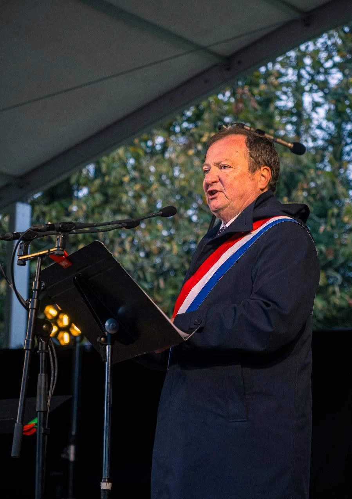
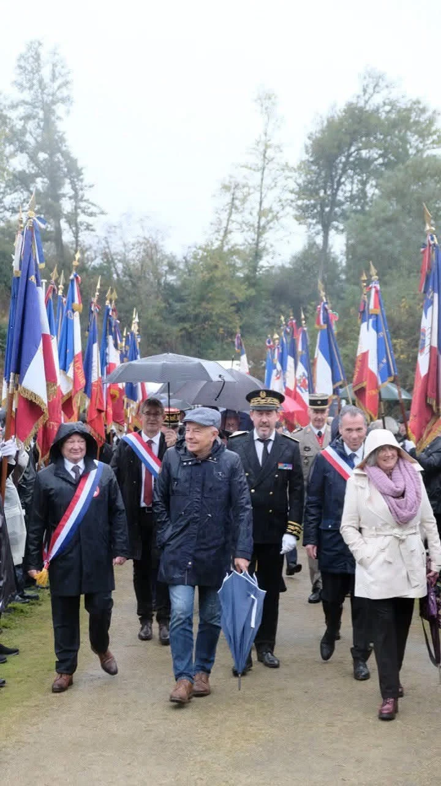
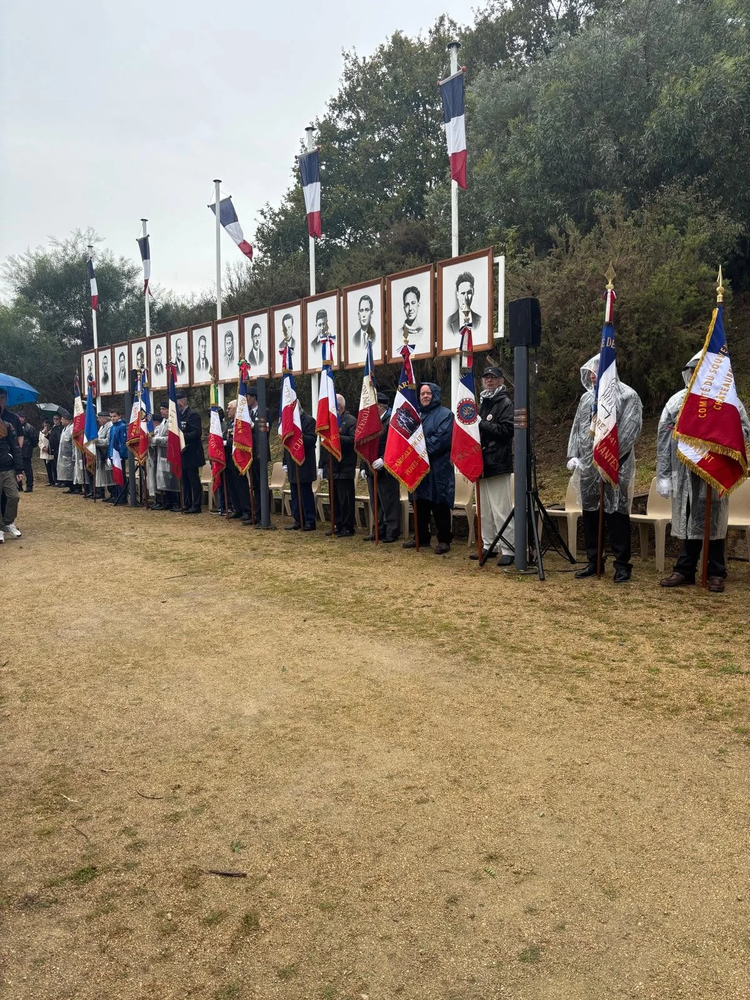
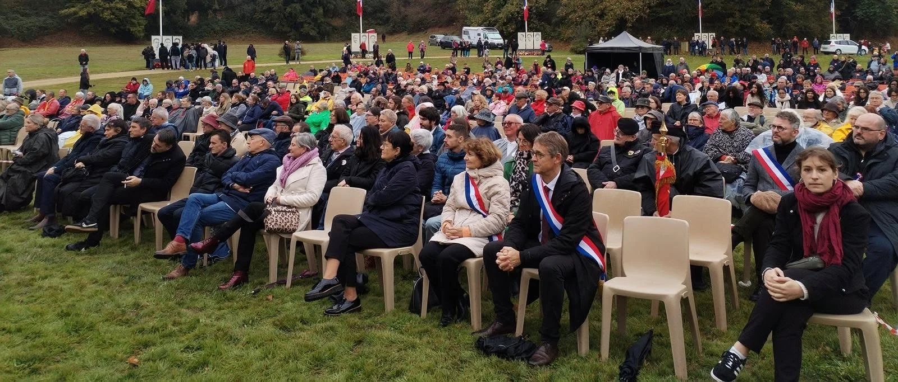
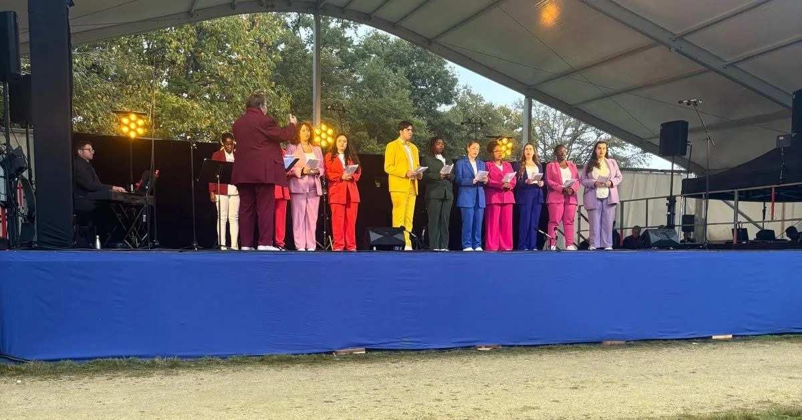
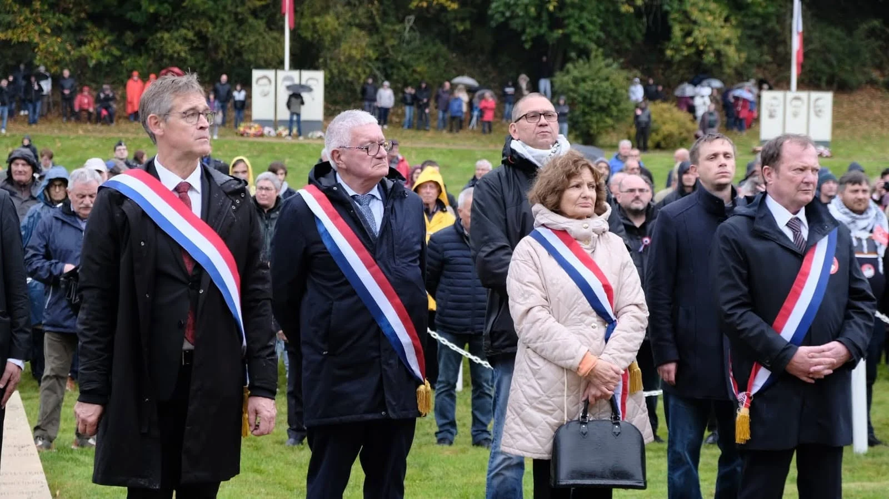
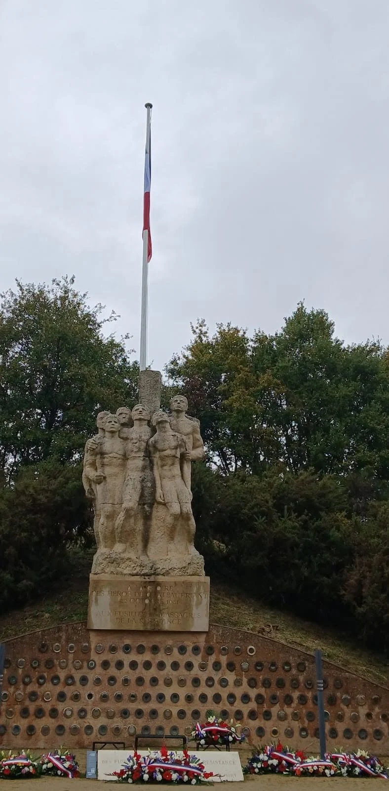
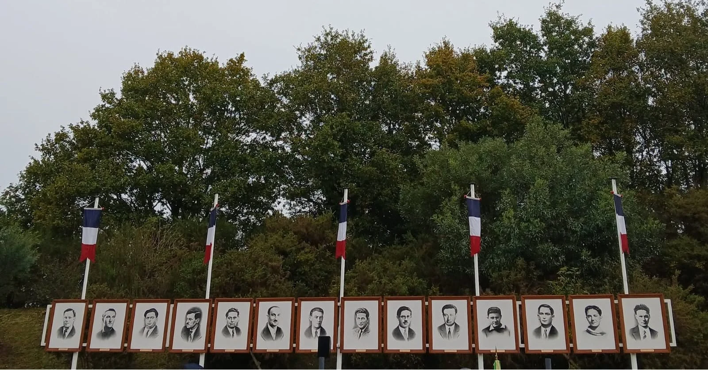

Commémoration relayée
À Châteaubriant, Stéphane Peu rend hommage aux 27 fusillés
Date de mise à jour indiquée par Facebook · 20 octobre 2025
Repères éditoriaux
Le 19 octobre 2025, Stéphane Peu a représenté le PCF à Châteaubriant. Il a rendu hommage aux 27 prisonniers du camp de Choisel fusillés le 22 octobre 1941. Les photos montrent la cérémonie et les portraits des fusillés.
Texte de la publication · Stéphane Peu
[HOMMAGE AUX 27 FUSILLÉS DE CHÂTEAUBRIANT]
Ce dimanche 19 octobre, je me suis rendu à Châteaubriant pour représenter le PCF - Parti Communiste Français lors de la commémoration en hommage aux 27 prisonniers du camp de Choisel, fusillés le 22 octobre 1941.
Il y a 84 ans, ces 27 résistants français, militants communistes, ont été exécutés dans les carrières de Châteaubriant. Leur seul « crime » est d’avoir refusé l’occupation nazie, s’être révoltés contre la collaboration et avoir défendu l’idée d’une France libre, débarrassée du régime de Vichy.
Parmi eux, Guy Môquet, dont les derniers mots résonnent encore : « Vous tous qui restez, soyez dignes de nous, les 27 qui vont mourir ! » Comme lui, aucun ne verra la fin de la guerre. Mais leur sacrifice, comme celui de tant de fusillés communistes, a nourri l’espoir de la Résistance et ouvert la voie à la Libération.
Chaque année, il est important de se souvenir de ces héros qui ont fait l’honneur de la France, surtout lorsque les héritiers de Vichy gagnent du terrain, en France comme partout dans le monde.








Sources
Stéphane Peu · publication relayée par le PCF 79 · bibliothèque Facebook · AR-0002-FB-00975
À lire aussi · L’annonce de la commémoration des 27 fusillés de Châteaubriant